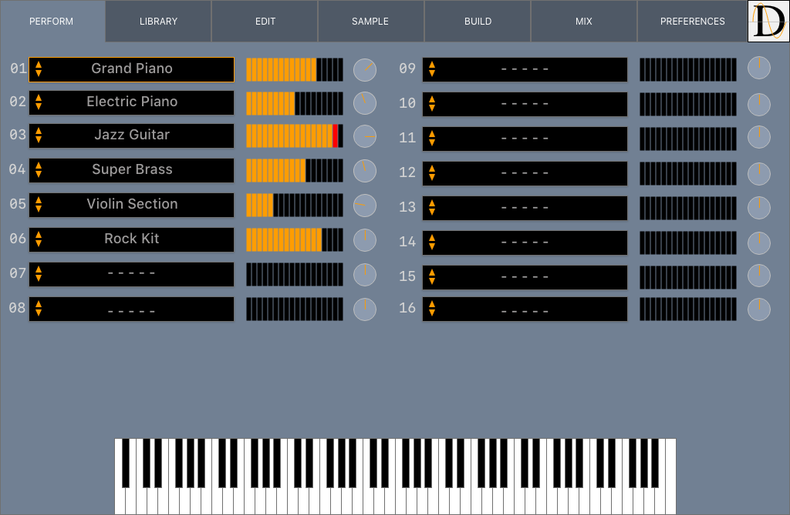
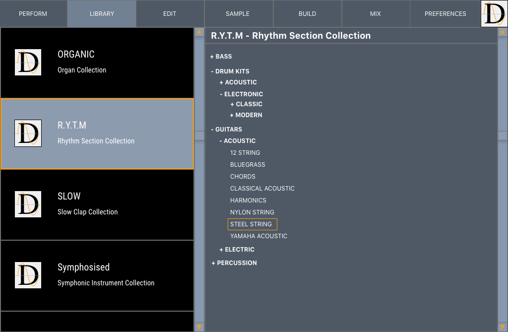
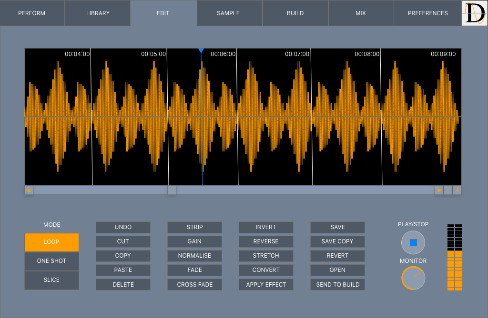
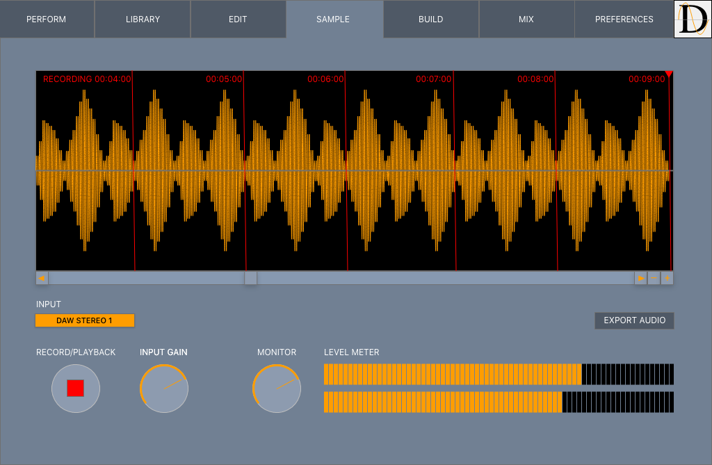
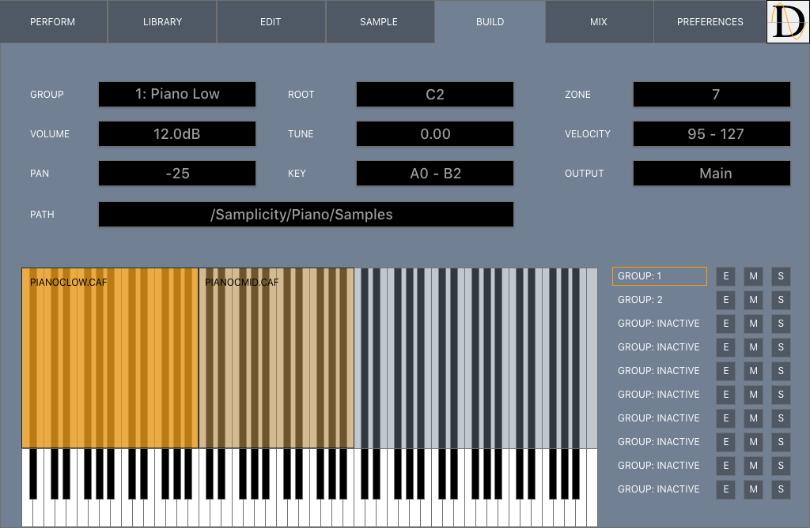
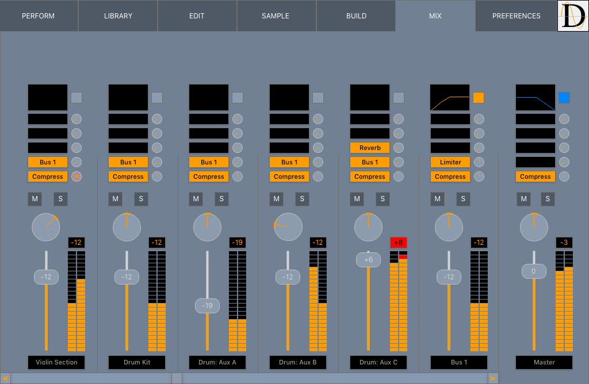

Load 16 independent instruments with quick access to instrument selection, volume and preview.

Browse the included wide-ranging collection of instruments, additional purchased collections, and custom designed instruments with quick access to load for performance or construction.

Edit individual samples within instruments for fine grain control. Choose playback mode, copy and delete sections, perform amplitudinal and temporal changes, apply effects and fades, all while previewing the result in real time.

Record live samples directly from an audio interface or audio routed through your DAW with automatic saving and preparing for construction of an instrument.

Assemble samples of varying pitches, dynamics, and volumes into complex instruments. Graphically control ranges of samples and edit paramters.

Balance and mix loaded instruments and apply real time effect processing. Use the wide range of included built in effects to personalise and process sounds.